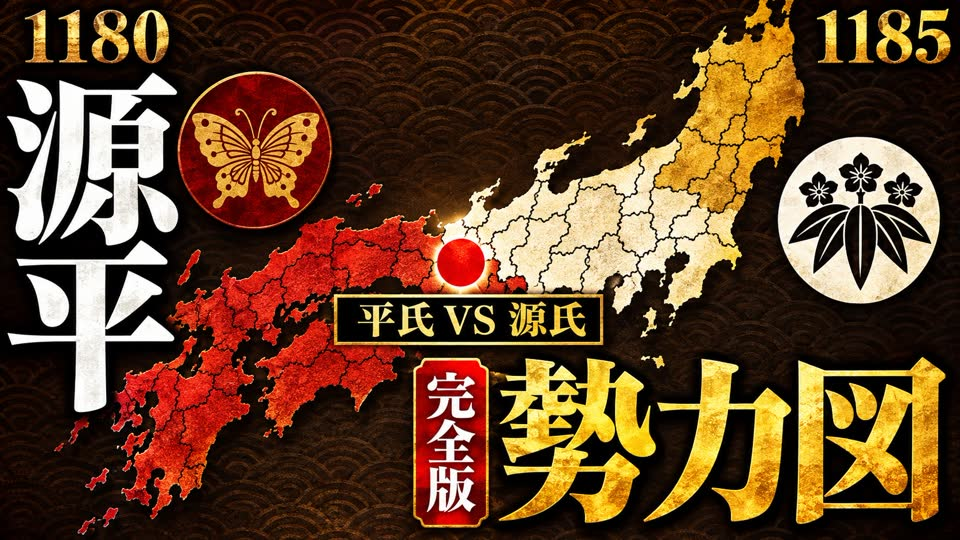
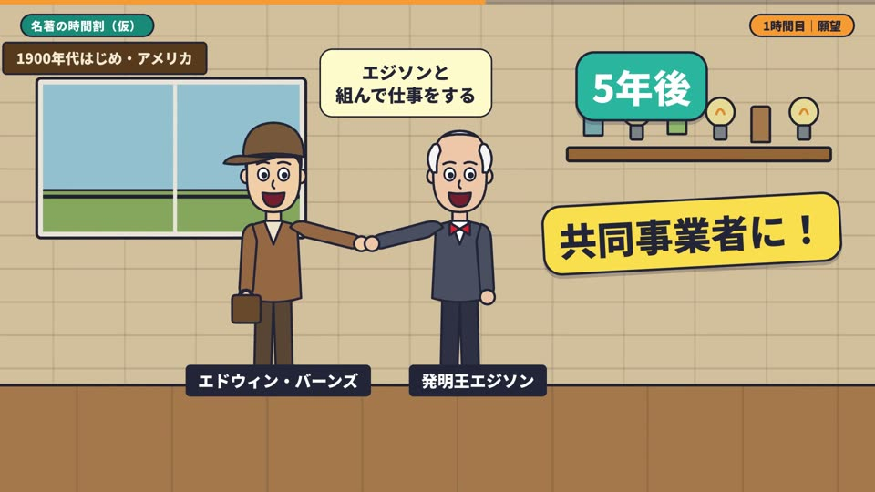
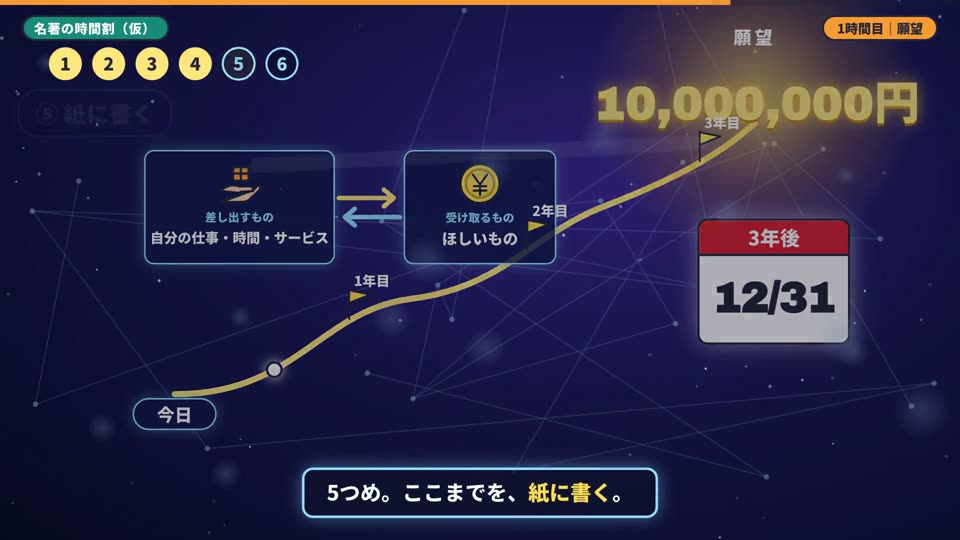

🎬 カドッチPJ 第2章
AI動画作成ワークフロー
型は借りる。絵と動きは、うちの遊び心で。
11月13日のミーティングでかどっちが話してくれたことを受けて、その夜のうちに試作を作りました。良かった所も、届かなかった所も、出たままお見せします。そのあとに作り方の流れと、次の打ち合わせで選んでほしい道を3つ並べました。動画は4本で、合わせて5分半ほどです。
111月13日に話したこと
「YouTubeって
「ビヨンドはもう
「一掃できる
「この感じで
題材の話では、2人の「やりたい」が重なりました。
「哲学書のやつ、
- 「一番神だった」本、『Think and Grow Rich』
- 自己啓発、能力開発、ビジネス書の中身を映像に
歴史上の人物を、
映像で
「自分も
- 哲学者の目で見る話。ショーペンハウアー、ニーチェ、アドラー
- 歴史上の人物の物語
- 案内役は、動物どうしの掛け合いが面白そう
会議の終わりに、おけもんから「成果物が一旦できたらシェアするわ。それ見て、方向性を決めよう」と話しています。このページが、そのシェアです。
2その夜に作った物を、出たままお見せします
試作は2つの型で作りました。歴史の勢力図と、ビヨンド風の本要約です。本要約は、ビヨンドを丸ごと写した1版目と、絵と動きを替えた2版目があります。
A 歴史の勢力図できた
お手本は、会議で話に出た歴史のチャンネル「ドラマチック見聞録」です。11月13日の時点で開設3週間、登録9,860人でした。借りたのは3つの部品です。年が進むと色が塗り替わる日本地図、武将どうしの対決カード、章の札です。
データ1枚を替えたら、次の1本が出ます。2本目の奥州合戦は、仕組みには手を入れず、題材データだけを替えて出しました。作り方は3の流れにまとめています。

サムネイルは、ChatGPTに頼みました。日本語の依頼文を1通送って、1分ほどで出てきた1枚目です。入れてほしい文字は6か所あり、6か所とも正しく入っていました。
- 国の境は、今の県の形で近い形にしています。兵庫や静岡のように1つの県に昔の国が複数ある所は、代表の国の色で塗りました。
- 家紋は、漢字1字の丸で代わりにしています。
- 対決カードの合戦名の右半分が、負けた側と一緒に暗くなる所があります。
- 声と音楽の大きさの釣り合いは、数字で揃えただけで、まだ人の耳で通していません。
B1 本要約・1版目（ビヨンドを丸ごと写した版）できた・正直に
お手本は「本要約チャンネル【毎日18時更新】」です。登録182万人で、同じ『Think and Grow Rich』の回があります。37分の動画を10秒ごとの絵で追い、流れを写しました。題材は「願望」の章です。台本は1937年の原著をうちの言葉で短くまとめた物で、お手本の台本や絵は使っていません。
写した流れ。黄色の所だけ、ビヨンドの枠の外に出ています。
負けた所：絵と人の動き

お手本の人物には陰影と表情があり、顔のアップで気持ちを見せます。うちの人物は、記号のような人形が立っているだけでした。見たおけもんの感想は「劣化版のコピーみたい」です。同じ絵柄を自前で描くと、こうなりました。
勝てた所：頭の中へ入る1カット

1分00秒から1分31秒です。カメラが人物の額から頭の中へ入り、ぼんやりした願いが、語りに合わせて金額、差し出すもの、日付、計画の道、紙と組み上がります。同じ1カットのまま外へ戻ると、手に紙が残っています。場面をカットでつなぐビヨンドでは、作れない所です。
B2 本要約・2版目（飛び出す絵本の版）できた
1版目と同じ台本、同じ声のまま、絵と動きを飛び出す絵本に作り替えました。人物の立ち絵はChatGPTに描いてもらい、紙の景色と仕掛けはすべてコードで作っています。1版目と見比べてみてください。
6つの手順では、タブを引くと金額が出て、天びんが釣り合い、円盤が12月31日で止まり、願う人が階段をのぼります。画面が止まって見える時間は、1版目の22.9%から0.6%に減りました（書き出す前の下見で測った数です）。
- 4人の立ち絵の絵柄が、まだそろい切っていません。
- 人物はシールが跳ねる、傾く、ポーズが替わる動きで、口や腕までは動きません。
- 次の本では、例え話と手順の仕掛けを、その本に合わせて作り直す手仕事が残ります。1版目は、題材データだけで全部が替わりました。
- 声と曲の大きさの釣り合いは、数字で揃えただけで、まだ人の耳で通していません。
同じ層を狙うチャンネル（競合の調べ物）まとまった
AIで本要約や教養の動画を作り、ビヨンドの本要約を見ている人たちを取りに来ているチャンネルを、日本語と英語で7つ見ました。数字は11月13日にYouTubeの画面で見た物です。
哲学と、動物の掛け合いの所
- 哲学者を物語のアニメにして伸びている所は、調べた範囲では見つかりませんでした。空いている所です。ただ、小さく始めた所もまだ伸びていません。
- 伸びている哲学の解説は2通りです。名前の強さと写真・映像で見せる形（アバタロー、登録53.3万人。ショーペンハウアー『幸福について』の回は111万回）と、やさしく言いかえる形（ぴよぴーよ速報、登録108万人。ひよこが語り手で、ニーチェの回は143万回）。
- 動物の掛け合いで伸びている例は、投資うさぎ「会話で解説」（登録15万人。うさぎと会社員の会話）と、テイコウペンギン（登録213万人。動物たちと人間の寸劇）です。
- 人物は、固定の2人とモノのアップで見せる。顔が崩れそうな場面は、手元や本のアップに替える。
- 画面を止めない。全部のカットにカメラの動きを付け、章に1回だけ、頭の中へ入る長い1カットを入れる。
- 冒頭は、言葉の対比ではなく、驚く事実や実験の話から入る。1版目は「願うだけの人／叶える人」の対比から入っていて、ここが弱かった所です。哲学者の回も、その人が突きつけた実験や一言から入ります。
3作り方の流れ
勢力図も本要約も、同じ流れで作っています。人が書くのは題材データ1枚で、そこから先は機械が1本の動画まで仕上げます。
🤖 機械がやる所
- 台本の文ごとに、AIの声を作る（同じ文は二度作らない）
- 声の長さから、全部の場面の時間割を作る
- 絵・地図・カード・字幕を組み、文字のはみ出しや重なりを検査する
- 音楽と効果音を作り、音量をYouTubeの目安に揃える
- 動画を書き出す
- 題、目次、出典、「AI音声」の明記まで、概要欄の下書きを作る
- サムネイルは、ChatGPTに日本語の依頼文を1通
👀 人が見る所
- どの題材にするか（チャンネルの企画）
- 台本が原著や史実と合っているか、言い過ぎていないか
- 声の好みと、音楽との釣り合いを、耳で1回
- 通しで1回見る
- 新しい本は、許諾の扱いを決める
- 投稿ボタンを押す
かどっちのディレクターさんとADさんに持ってもらうのは、「人が見る所」の方です。題材データを書けば、次の1本が出る形にします。
4作ってみて、わかったこと
1型は借りられる
冒頭の掴み、章立て、画面の部品は、実物を見れば抜き出せます。題材データ1枚から1本が出る形にもできました（勢力図の2本目）。
2相手の絵柄をまねると負ける
ビヨンドは、人物の素材と動きが出来上がっている道具です。同じ絵柄を自前で描くと、劣化コピーになりました（本要約の1版目）。
3勝てるのは、見る体験の上乗せ
カメラが頭の中へ入る。図が語りに合わせて組み上がる。紙の世界が立ち上がる。ビヨンドの枠では出せない所で、かどっちの言う「視聴体験を上げていくゲーム」の側です。
4借りた型だけだと、秒でまねされる
データ1枚で出せる物は、相手もデータ1枚で出せます。残るのは、案内役のキャラクターと世界観です。かどっちの言うIPに当たります。
5これからの方向性と、3つの道
次の打ち合わせで、この3つから1つ選んでください。
①哲学者・名著・歴史上の人物 × 飛び出す絵本 × 掛け合いの案内役
うちの本線の候補- 良い所
- 見慣れた流れに、ほかに無い絵が乗ります。案内役のキャラクターがIPの種になります。2人のやりたい題材と、かどっちの好きな本から始められます。
- 気をつける所
- 2版目の出来しだいです。お手本は概要欄に「出版社様から許諾を得て配信」と書いています。新しい本は許諾の扱いを決めるので、最初は1937年の原著をうちの言葉でまとめる回から始めます。
見る動画：B1・B2
②歴史の勢力図
- 良い所
- もう動いています。1本を2〜3分で書き出せます。
- 気をつける所
- 伸びているチャンネルと、正面からぶつかります。戦の題材で収益化が止まった例も、会議で見ました。地図データの利用の決まりは、公開の前に確かめます。
見る動画：A
③ショートの続き（コストを下げて）
- 良い所
- これまでの30本と、回してきた仕組みが残っています。
- 気をつける所
- 30本で登録は82でした。再生あたりの単価は下がっている、とかどっちから聞いています。
第1章の続き
6次の打ち合わせで決めること
上の①②③から1つ。
題材データを書く人、通しで見る人、チャンネルの持ち主、投稿する人。
①なら『Think and Grow Rich』か、ショーペンハウアー、ニーチェ、アドラーか、歴史上の人物か。②なら、どの時代から始めるか。
予約リンクから、次の打ち合わせの日を取ってください。1〜2週間後を考えています。それまでに、動画を見ておいてもらえると話が早いです。
勢力図の地図データの利用の決まりなど、公開の前に確かめる事を進めておきます。